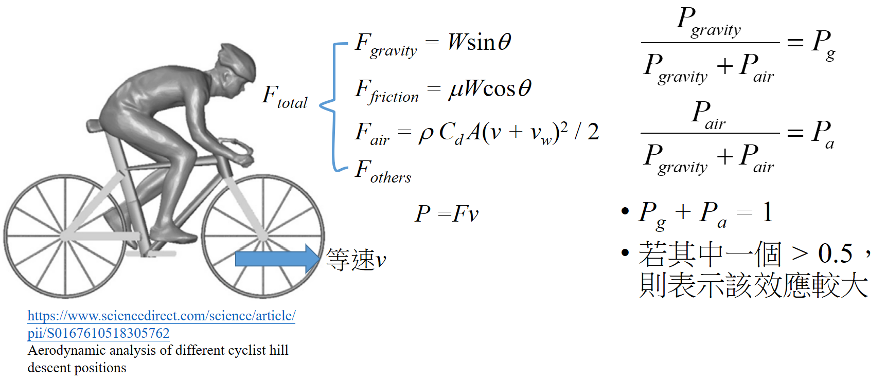

爬坡時重力與空力效應的比較
空氣力學對於自行車來說，速度越快阻力就越大。而重力則是在坡度越陡時影響越大。那麼這兩個效應到底在什麼情況下，誰的影響比較大呢？在此我們會有一些假設，這些假設並不會對計算結果造成太大的誤差，如過程中 總重量、重力加速度和摩擦係數為定值 。另外也有限制我們的計算情境如下
- 全程只有一個人獨騎
- 過程中不落地
- 無風的晴天
- 僅使用平均坡度計算
- 功率可以穩定輸出
所以根據假設，把剩下沒考慮到的叫做 Fothers。所以當人施力的時候會受到這四個力個抵抗，若是當下的速率為 v，那麼我們將個別的力算出來再乘上速率，就可以得到每個力所消耗的功率。在此我們將重力與空氣阻力所產生的功率加起來放在分母，然後分子分別放上重力與空氣阻力的功率，就分別得到 Pa 與 Pg ，代表的是分別是空氣阻力和重力分別佔這兩個的比重多少，且兩個和為 1，所以若其中一個大於0.5，則表示該效應較大。例如在平地就不會有重力作用，所以 Pa = 1，Pg = 0，所以空氣阻力的效應比較大。
|  |
|---|
| 圖一：比較方法 |
此為這篇文章比較方法，若有其他比較辦法也可以利用此方程式自行做計算比較。在我還沒深入去想這問題時，我直覺是空氣阻力產生的功率是速率的三次方，那應該大部分的情況是空力影響較大吧？
但是在單車科學這本書上，如果是300瓦的情況，那在坡度2%時兩者影響力差不多，我當時還滿驚訝的，因為坡度2%並不是很陡的坡，另外這張圖還有重量與風阻面積沒考慮比較，且對一般人來說300瓦太難達成了，那麼模型建立後我們就可以來驗證這件事情。
在此我們先改變瓦數，看看瓦數降低，兩者影響會如何改變。綠色為空力效應，黃色為重力效應，橫軸為一路段中僅有爬坡的平均坡度，縱軸為百分比，total weight 為人+車+裝備重。在此的總重量假設為 79 公斤，風阻面積假設是 0.28，而可看到當瓦數降低，空氣阻力的影響也降低，原因是因為瓦數低速率就慢，所以空力效應會降得比較快，若平均瓦數為 200 瓦如圖三，則當平均坡度為 1.5% 時空力效應就已經低於重力影響了。
 |
|---|
| 圖二 |
 |
|---|
| 圖三 |
接著來看風阻面積改變時兩者的影響力，在此的總重量假設為 69 公斤，均瓦是 200，風阻面積從 0.35 降到 0.28，大概就是比較挺的騎姿到比較趴的騎姿，可以看到若都只有 200 瓦，那降低風阻面積對於結果差異不大。
|
|---|
| 圖二 |
 |
|---|
| 圖四 |
而當重量從 69 到 79 時，重量效應就會增加。但整體而言改變非瓦數的其他數值，對於兩者的效應消長變化沒那麼大。
|
|---|
| 圖三 |
 |
|---|
| 圖六 |
所以單純以爬坡路段來講，體重 70 公斤的車手，約在平均坡度 1.5%(200 W) ~ 2%(300 W) 的區間，重力效應就會超過空力效應。所以像台灣一些經典登山賽如西進武嶺道人止關前，塔塔加到同富國小 7-11 前的這些路段，或者是可以看一下比賽中的爬坡路段，坡度少於 2 %可以盡量跟，高於2%就可以考慮自己騎。但是出去騎乘或比賽，很少有純爬坡的路段，所以之後會考慮有平路與下坡的丘陵地形。